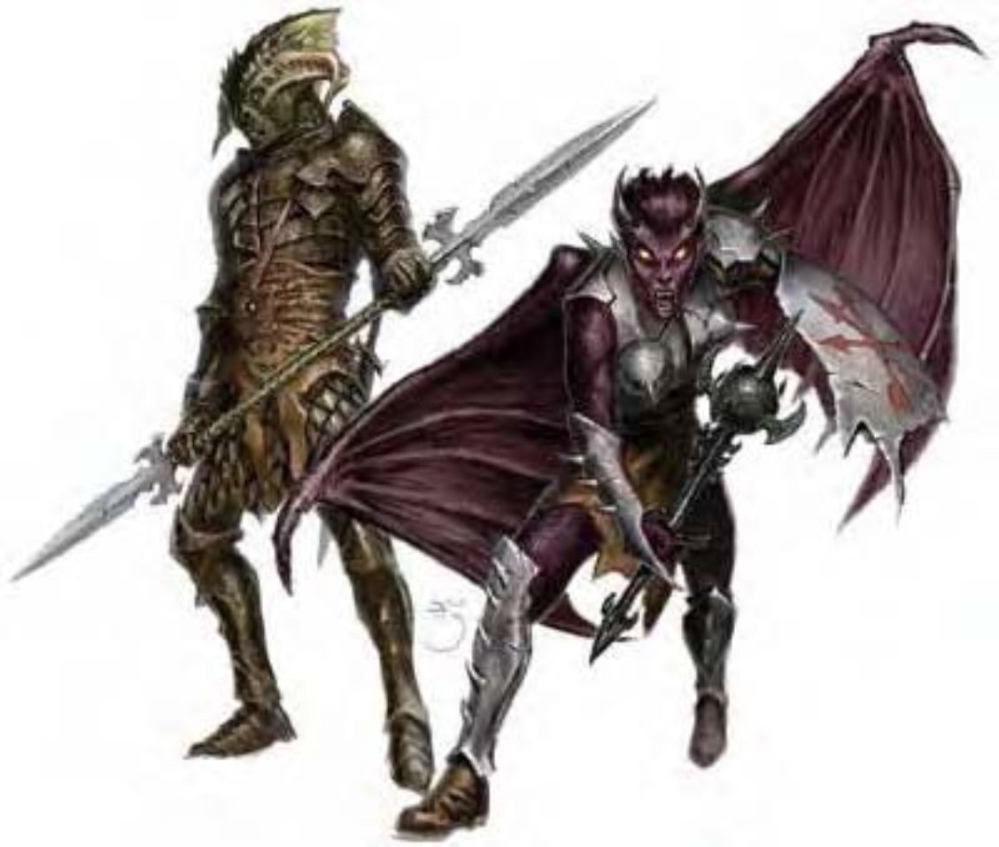

龙的魔法天性使他们几乎能与任何生物产生后代。龙通常在形体变化后与其他生物产生子代，并随即抛弃他们。
半龙生物比起其他不具有龙血统的同族更令人畏惧。鳞片、高大的体型、爬虫般的眼睛与过大的爪与牙，其外貌在显示出他们的血缘。有些半龙具有飞翼。
这种强大的生物有披覆着黑色鳞片的皮肤、锐爪、尖牙，以及眼睛上方一对向前弯曲的角。
半黑龙战士使用双头武器 (通常属于奇特武器)。具有侵略性的易怒性格使他们十分好战。他们经常带领其他邪恶战士，但战斗时却是单打独斗。
喷吐攻击 (超自然)：30英尺直线，每天1次。造成6d8点强酸伤害，通过强韧检定 (DC=14) 则伤害减半。豁免检定DC的调整值与体质调整值相同。
持有物：「+1全身铠甲」、精制双头剑、2支标枪。
| 生命骰 | 4d10+16 (43HP) |
| 先攻 | +1 |
| 速度 | 穿着全身铠甲时20英尺 (4格)；基本速度30英尺 |
| 防御等级 | 24 (+1敏捷、+4天生、+9「+1全身铠甲」)、接触11、措手不及23 |
| 基本攻击/擒抱 | +4 / +10 |
| 攻击 | 精制双头剑+12近战 (1d8+11/19-20)；或标枪+5远程 (1d6+6) |
| 全力攻击 | 精制双头剑+10近战/+10近战 (1d8+8/19-20、1d8+5/19-20) 及啮咬+5近战 (1d6+3)；或2爪抓+10近战 (1d4+6) 及啮咬+5近战 (1d6+3)；或标枪+5远程 (1d6+6) |
| 占据/触及 | 5英尺 / 5英尺 |
| 特殊攻击 | 喷吐攻击 |
| 特殊能力 | 黑暗视觉60英尺、对强酸、「睡眠术」、麻痹免疫、昏暗视觉 |
| 豁免 | 强韧+8、反射+2、意志+4 |
| 属性 | 力量22、敏捷13、体质18、智力10、感知12、魅力12 |
| 技能 | 攀爬+5、威吓+4、跳跃-1、聆听+3、侦察+4 |
| 专长 | 擅长奇特武器 (双头剑)、钢铁意志、猛力攻击、双武器攻击、专攻武器 (双头剑)、武器专精 (双头剑) |
| 环境 | 温带平原 |
| 组织 | 单独 |
| 宝藏 | 标准 |
| 阵营 | 通常混乱邪恶 |
| 进化 | 视人物职业而定 |
| 等级修正值 | +3 |
「半龙」是一种先天模板，可以套用在任何活物、实体生物上 (被套用的生物称为基底生物)。
除了此处所列说明之外，半龙生物所有数据和特殊能力都比照基底生物。
体型及种类：体型不变。生物种类变为龙，毋须重算其基本攻击加值或豁免加值。
生命骰：将基底生物的种族HD增加一个骰子等级 (最高为d12)。职业HD不变。
速度：大型以上的半龙生物可以飞行，速度为基底生物基本行走速度的两倍 (最高120英尺)，机动性普通。中型以下的半龙生物没有飞翼。
防御等级：+4天生防御。
攻击：半龙生物可进行两次爪抓与一次啮咬攻击，爪抓为主要天生武器。若基底生物会使用武器，则其半龙生物亦保有此能力。未持武器的半龙生物将以爪抓进行攻击，但有武器时则通常会使用武器。
全力攻击：未持武器的半龙生物全力攻击时，可进行两次爪抓与一次啮咬攻击。若持有武器则会用武器作主要攻击，以啮咬进行次要天生武器攻击。如果还有空手，将以爪抓进行额外的次要天生武器攻击。
伤害：半龙生物有爪抓与啮咬攻击。若其基底生物没有这两种天生武器，请参见下表决定伤害值。若有则采用较高者。
| 体型 | 啮咬伤害 | 爪抓伤害 |
|---|---|---|
| 超微型 | 1 | ― |
| 微型 | 1d2 | 1 |
| 超小型 | 1d3 | 1d2 |
| 小型 | 1d4 | 1d3 |
| 中型 | 1d6 | 1d4 |
| 大型 | 1d8 | 1d6 |
| 超大型 | 2d6 | 1d8 |
| 巨型 | 3d6 | 2d6 |
| 超巨型 | 4d6 | 3d6 |
特殊攻击：半龙生物保有基底生物原本的所有特殊攻击，额外还可每天使用1次喷吐攻击，效果依龙的种类而异 (见下表)。半龙生物的喷吐攻击可造成6d8点伤害，通过反射检定 (DC=10+半龙的种族生命骰的一半+半龙的体质调整值) 则伤害减半。
| 龙种 | 喷吐攻击 | 龙种 | 喷吐攻击 |
|---|---|---|---|
| 黑龙 | 60英尺直线强酸 | 黄铜龙 | 60英尺直线火焰 |
| 蓝龙 | 60英尺直线闪电 | 青铜龙 | 60英尺直线闪电 |
| 绿龙 | 30英尺锥状腐蚀 (强酸) 气体 | 赤铜龙 | 60英尺直线强酸 |
| 红龙 | 30英尺锥状火焰 | 金龙 | 30英尺锥状火焰 |
| 白龙 | 30英尺锥状寒冷 | 银龙 | 30英尺锥状寒冷 |
特殊能力：半龙生物保有基底生物原本的所有特殊能力，另外还额外拥有黑暗视觉60英尺与昏暗视觉。半龙生物对「睡眠术」与麻痹免疫，此外依龙种不同而对不同的伤害免疫 (见下表)。
| 龙种 | 免疫 | 龙种 | 免疫 |
|---|---|---|---|
| 黑龙 | 强酸 | 黄铜龙 | 火焰 |
| 蓝龙 | 电击 | 青铜龙 | 电击 |
| 绿龙 | 强酸 | 赤铜龙 | 强酸 |
| 红龙 | 火焰 | 金龙 | 火焰 |
| 白龙 | 寒冷 | 银龙 | 寒冷 |
属性：将基底生物属性作如下增修：力量+8、体质+2、智力+2、魅力+2。
技能：半龙生物的技能点数相当于龙类，为 (6+智力调整值) x (HD+3)。计算时请勿将职业等级赋予的HD计入，半龙生物乃由于种族HD才能获得龙的技能点数，其职业等级只能赋予他们正常的技能点数。本职技能与跨职技能皆与基底生物相同。
环境：同基底生物或龙。
挑战级数：同基底生物再+2 (最小为3)。
阵营：依龙种类而异。
等级修正值：基底生物的等级修正值+3。